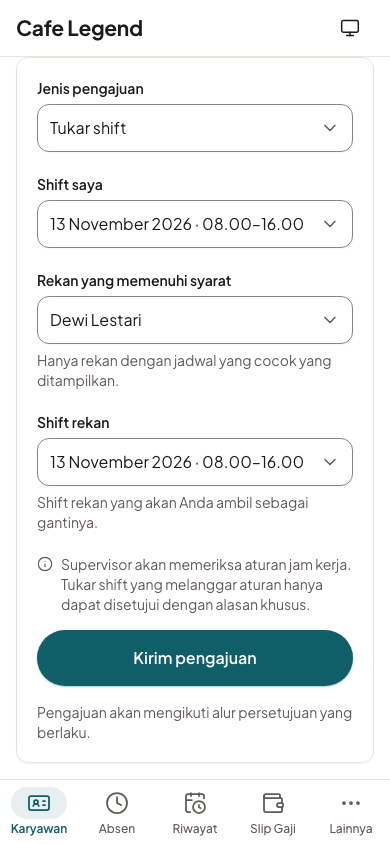
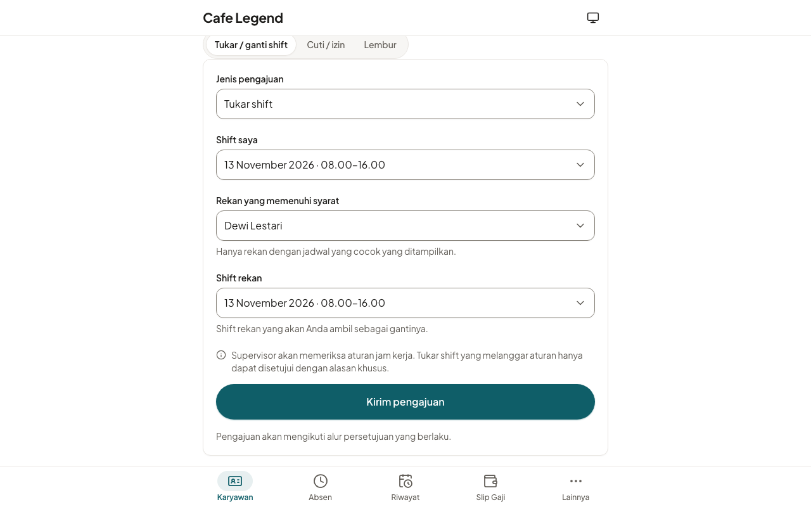
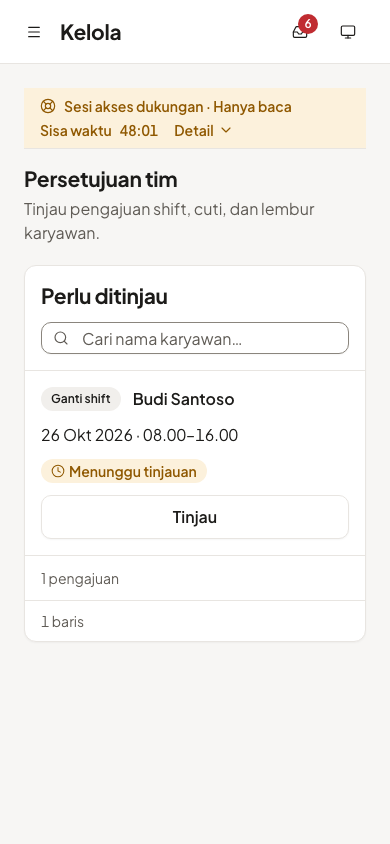
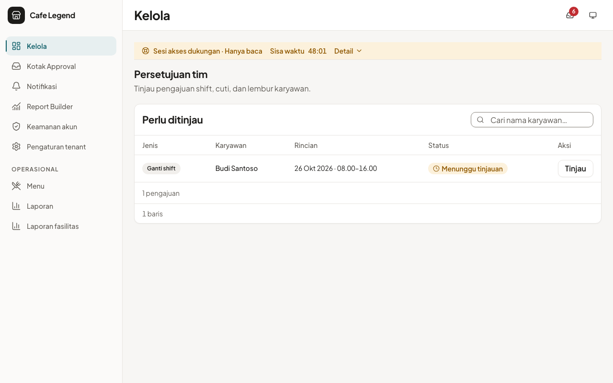

Bukti layar yang sudah disetujui, memakai data contoh sesuai kontrak API terbaru.
Karyawan memilih shift sendiri, rekan, dan shift rekan. Antrean supervisor menampilkan nama pemohon serta jadwal. Pemeriksaan akses backend dibuktikan terpisah melalui test isolasi.



